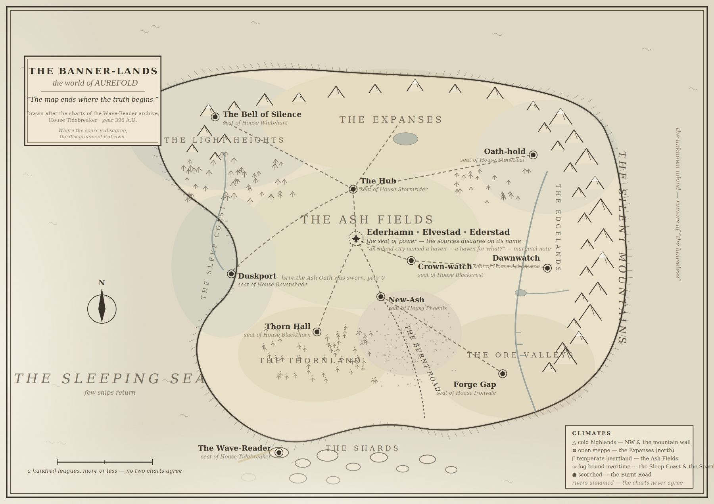

A literary epic fantasy of ten great houses
Watch the trailer
OUT NOW · EBOOK FREE
The Bell of Silence — Book One

In the high, quiet valleys of the Light Heights, a goatherd named Sela hears something on the wind that she cannot explain — and will not pretend to. She says only what she knows, and no more. In the Banner-lands that alone is dangerous.
For House Whitehart exists to test those who claim to hear, and a world built on ten sworn houses would rather settle the meaning of a voice than live with an open question. What Sela heard may be nothing. What the world decides it means will change her life either way.
The Bell of Silence is the first book of Aurefold: a story about truth, testimony, and the price of keeping silent in a place where every silence is read as an answer.
Enter the archive
The Banner-lands are older than this book, and the record is not settled.

The road to publication
Three hundred and ninety-six years have passed since the War of the Unification ended and the count began again at nought. The four-hundredth — the Jubilee, when every oath, claim, and disputed precedent is presented again — is four years away. That is where Book One stands.
Book One is out now as a free ebook. The next work is the printed edition: professionally edited, designed, and produced. You can follow every major step for free, or become a member and help carry the book to print.